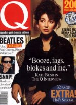

To the Reaching Out (Interviews) Table of Contents

To
the Reaching Out (Interviews) Table of Contents

(Cover
courtesy of Emmy May Lombaerts)
Date: Sat, 30 Oct 93 16:23:17 EDT
From: Andrew B Marvick <abm4@columbia.EDU>
Subject: Interview in 'Q', Dec. 93
The New 'Q' Interview with Kate Bush
By the way, someone with graphics capabilities should snatch up a copy of this, the December '93 issue of 'Q', because there are four stupendous new large color portrait photos of Kate, one of which is the cover. Never has she looked more mature, or more striking.
For no apparent reason except sheer bloody-mindedness, the cover bears the inscription:
"'Booze, fags, blokes and me.' KATE BUSH IN THE Q INTERVIEW."
Although she does briefly respond to questions about drinking and smoking, she never uses any of the above language, making the quotation marks completely unfair. The interview, which appears below, is however not bad. The photos also shows what may or may not be a Bush-owned property; there is no explicit identification of the locale for the photos (the interview is described as having taken place in a dubbing studio). Certainly Kate herself is making new statements, ones which in some cases wholly contradict things she has said in dozens of earlier interviews; and the general tone she manages to transmit (in spite of the journalistic filter) is fascinatingly different from that which has characterized her speech heretofore. Enjoy.
"She might be a self-confessed power head, prone to control freakery and studio-hermitdom and a total stranger to the nightclub dancefloor..."but I'm never grumpy," Kate Bush tells Stuart Maconie. "I like to think I'm quite a happy little soul."
Catherine Bush, 35, a doctor's daughter from Welling, finishes her mid-afternoon vegetarian meal and brings her goblet of red wine through into the small adjoining office, with its high window and battered typewriter, deep in the bowels of a dubbing studio in Cricklewood. "Do you mind if I don't sit behind the desk," she begins nervously, Silk Cut already en route to famous mouth, "but it will seem a bit like a job interview."
Job interviews, one suspects, are an area in which Kate Bush has had limited experience, having held the position of waif-like songstrel by appointment since the age of 17. Later, we shall enquire what she does for fun. But already it's obvious what she doesn't do. Interviews. Right down at the foot of the list with slam dancing, casual abattoir work and unanaesthetized surgery we would wager. It's not that Kate Bush is anything less than charm, elegance and fragrance during interviews. Rather that behind the winsome smile and girlish laugh, there's the seasoned reluctance of a woman who decided at 21 that spending twice as much time talking about her records as she did making them was a pretty preposterous state of affairs.
By her own admission, this has been a difficult 18 months. Her new album The Red Shoes was begun, as all the others, with good intentions of an early finish, soon to dissipate into another protracted bout of studio work, moving, at times, as if through treacle whilst wearing diver's boots. "It's ridiculous, isn't it? Three years to make a record. The worst is the stuff is often written very quickly. A day, a day and a half, but once you get into the studio, it starts to take on a life of its own. But I wouldn't understand it if I wasn't involved. I'd think it was outrageous."
On a personal note, her mother died, a tragedy at the best of times but particularly to someone whose family ties are as indissolubly knit as Kate's. (She has never had a manager [Not quite true, actually; there were two back in the early days -- IED] and her business affairs have always been handled by the Bushes themselves.) And, at a time when she should have been lighting cigars and wetting The Red Shoes' head, she's found herself rushing to complete another long-standing project, her directorial debut with the 50-minute [elsewhere described as only 40-minutes -- fair warning] feature The Line, The Curve and The Cross. Featuring Kate herself, Miranda Richardson and mime guru Lindsay Kemp, it's a fairy tale revolving around six of the songs from The Red Shoes. "Ideally I would have had more time, but I didn't think of it until after I'd finished the album. But the people were great. It was humbling having all these specialists working on something I'd thought up. It was quite brave of me in some ways, I think. And I would do it again, but I'd just fancy a little walk-on this time," she says with the prospect of two more weeks dubbing in darkest Cricklewood before the film is premiered at the London Film Festival this month.
Kate Bush's career falls neatly in half like a well-thumbed book, the broken spine in this instance being The Dreaming, 1982's "difficult" album. Prior to this, Bush had established her stellar reputation with a debut Number 1 single at 19 with Wuthering Heights and a trio of albums that revealed her as rock's premier ingenue --precocious (she apparently wrote The Man With the Child In His Eyes at 12), beautiful, talented and with the ability to turn everything from incest, sexual yearning towards infants, the threat of nuclear incineration and Delius into limpid ballads and new-minted pop-rockers. Grown men and women alike cooed, DJs said "Great Lady!" and Bobby Davro and Faith Brown clogged up Saturday evening TV with unfunny impressions of her unrestricted performing style (although, weirdly, Kate once wrote a four-page letter of congratulation to Faith Brown).
She is oddly disparaging of albums like Lionheart and Never For Ever now and even then seemed keen to leave this phase behind, perhaps understandably -- she had been given two years to write the songs for The Kick Inside and, allegedly, four weeks to come up with Lionheart. By 1982 she was under the influence of Peter Gabriel and the revolutionary drum sound of Phil Collins's In The Air Tonight. Determined to do something like this herself, she became locked into a hellishly expensive round of aborted studio stints, finally emerging with The Dreaming, easily her weirdest effort and one that effectively stalled her career, peaking at Number 3 (Never For Ever entered at Number 1) and spawning a batch of flop singles. Wild rumours abounded, including the choice story advanced by the Daily Mail that she had ballooned up to 18 stone. This was patently untrue but she *had* ground herself down into a state of nervous fatigue, not helped by a reputed diet of junk food and chocolate. It was not the happiest of times.
"I look back at that record and it seems mad," she says now. "I heard it about three years ago and couldn't believe it. There's a lot of anger in it. There's a lot of 'I'm an artist, right!'" Fingers burned by the experience of The Dreaming, she decided that a studio of her own and a retreat into her domestic shell was a priority. Thus was ushered in a period of stability from whence came the enormously successful Hounds of Love and, in 1990 [1989], The Sensual World. These later records reflected her growing interest in the studio as a compositional tool and her growing desire to stay well out of the public eye.
The Red Shoes is a return to a more direct style. Rubberband Girl is the poppiest thing she's essayed in 10 years, the long-awaited Prince collaboration Why Do I Love You? [sic] can barely contain its own exuberance and Constellation Of The Heart is a happy experiment with disco-funk. Kate Bush would rather talk about the whys and wherefores of her art than about anything else. Her personal life is off limits; but given this, she agrees -- helpfully but warily, and lighting another Silk Cut as she goes -- to talk a little about Kate Bush.
What do you do for fun?
"I make records (laughs). There's a lot of other stuff that I like to do. But I find making records really exciting. It's making something out of nothing and you can involve other people. It's brilliant."
But what do you do when you're not making records?
"Well, I don't listen to records. I tend to watch a lot of films. I tend to work quite late and I tend to put in quite long hours. If you work like that, you don't get a great social life. I watch a lot of comedy. I suppose it's the same if you work in film: You don't want to watch films to relax. You want to give those particular senses a rest."
So what makes you laugh?
"Lots of stuff. I think it's an incredible gift to be able to make people laugh. It's not just a question of guts, it's having the talent to achieve it. I can't think of anything braver than being a stand-up comedian. I suppose you must learn a lot about yourself. Even if you get booed off you must get so much insight. I love all kinds of stuff. I still think Fawlty Towers is the best sitcom ever. I like Python, I like Ben Elton, I like what Rik and Ade do. We've got a load of good comics here...and a lot of good comediennes, which is nice."
Could you do it?
"No, I don't have that gift for comedy. I love having a laugh but there are people who do it so well I wouldn't dare to presume I could do it."
Have you grown up in public?
"Well, I think I have grown up in quite a strange way, but then a lot of people do...and a lot of people don't grow up at all. But it's been unusual, yes. In public? Well, I'm very grateful that people have wanted to listen to my music. It's more like them that have grown up with me. People from way back who became fans, they're still there. There's still the odd name I recognise. People have grown up with my music and they identify periods of their life with it. I find that lovely. It's very difficult to get to grips with the idea of someone playing your stuff at home. It's a very strange idea to be taken into all these people's houses."
Do you read your fan mail?
"I used to read much more than I do. I don't seem to have the time to get involved in that any more. People are just so sweet, so encouraging, sometimes it's the best thing to get an encouraging letter, particularly if you're in one of those phases where you can't seem to get ahead. It's just nice to read a letter that says, 'I really like your music and good luck with the new record and everything.'"
You are famously uncynical. Or at least, you were. Has all that changed?
"I think it has. I think it's impossible to move through this business -- in fact, it's impossible to move through life without adopting a bit of cynicism. It's a protective and defensive thing. People are going to rip you off, they're going to stitch you up, and if you're cynical, it prepares you for the reality of this. It prepares you for things that, chances are, are going to happen to you (laughs)."
Do you ever lose your temper?
"Yeah. How can you be human and not? It's healthy for you. I used to see it as totally negative, when I was much more uncynical (laughs). I'm not so sure now. It's quite a motivator, you know."
Would you make a good therapist?
"I really don't know. When I was little, I really wanted to be a psychiatrist. That's what I always said at school. I had this idea of helping people, I suppose, but I found the idea of people's inner psychology fascinating, particularly in my teens. Mind you, it's probably just as well I didn't become one. I would have driven all these people to madness. I'm better off just fiddling around in studios."
What newspapers and magazines do you read?
"I don't, really. I find them all slightly biased and angry in their own ways, and generally I prefer the radio or the television, especially where news is concerned. I know the television is biased too, but it doesn't seem as sort of characterised as the press. And magazines I don't read at all, I'm afraid. I did for a while and found them quite boring and slightly manipulative. I thought a lot of magazines were trying to -- or if not trying to, then ending up, making you feel inadequate. I didn't think a lot of healthy things were going on in them. I had friends who got magazines regularly and they were getting more and more concerned about them, more and more obsessed with the articles and the quizzes. It took me a long time to grow out of The Beano, though, so perhaps I'm just not grown up enough for magazines."
Which of your old songs make you wince?
"My God, loads. Absolutely loads. Either the lyric's not thought out properly or it's just crap or the performances weren't well executed. But you have to get it in context. You were doing it at the time and it was the best you could do then. You've got to live with it. Some of those early songs, though, you think, 'What was I *thinking* about? Did *I* write that?'"
Like what?
"I can't name one. There's not just one. There were too many to mention. But I was very young, so I can be gentle on myself for that. Having said that, I think some of my lyrics were just, well, mad, really. And why not! You've got to be prepared to fail and get a bit hurt or bruised along the way."
As someone who's written a very stirring song about England (Oh England My Lionheart), will you always be happiest here?
(Astonished:) "Do you like that one? That's one of the ones I meant. It makes me just want to die. There's just something about that time. It's such an old song. Ooh God, I haven't heard it for so long. Must have been on tour in 1979. Anyway, England, yeah, I am happiest here. We're a funny race, we give each other such a hard time, don't you think? One thing we take very, very seriously is this whole business of taking the piss, the whole stuff about irony. I think there's a real integrity about us under all the layers and our sense of humour is so strong. I've always felt pulled to Ireland because my mother was Irish, but whenever I've gone, I've never felt very at home. So I've played with the idea of staying there. I'm not sure I really could live anywhere else but here. But it might be interesting. For a while."
Could you manage on a croft in the Outer Hebrides?
"Yeah, I think I probably could. There'd come a point when I'd have to come up for air, but a lot of my ways would suit that kind of life quite well, particularly if you wanted to do some writing. You can quite handle a very introverted lifestyle, but when that's finished, it's nice to get out. Do something different. But I'd love to end up somewhere quiet in the country."
You wouldn't miss the bright lights?
(Glances ruefully through window at Cricklewood drizzle:) "I think I could manage it."
Have you got any heroes or heroines?
"I'm a really big fan of the English director Michael Powell. I just had this phase of really being into old film directors. Like Hitchcock. His stories are just so clever. So lots of film directors are, well, not heroes but strongly admired. A hero suggests something inhuman to me. And my favourite people and those dearest to me are very human and have such weaknesses, and that's what makes them special. They're not larger than life or inaccessible. I like quiet people and their funny ways."
If you were casting yourself, what part would you be good at?
"God! What would I be good as? A learner driver. I do drive. It's not my driving I'm not happy with. I just feel that's how I go through life -- behind the wheel, pretending I know how to drive when in fact I'm only learning."
You wouldn't make a good Lady Macbeth?
"Lady Macbeth? (Laughs) No. To tell you the truth, I'm not that intrigued by acting. If someone offered me something really interesting, especially someone I admired, I'd do it because I'd be crazy not to. But I'm no actress. I don't have the talent or the temperament."
Do you cry at soppy films?
"Yeah, if it's the right thing, though not as much as I used. I used to be very emotionally based. I'm not so sure I am now. Things can still make me cry, though, particularly music. Like the first time I heard the Trio Bulgarka. It's just sound. I didn't understand what they were saying, but I wasn't the only one sitting there weeping. Music has that way, doesn't it? You just go."
Have you got into grunge yet?
"Err, no. I like a lot of diverse music, but nothing really wild. Nothing very odd. I don't watch The Sound of Music every night or anything...But what is unexpected these days? I like classical music, but I wish I was more eloquent with it. I hear things and think, 'That's beautiful,' but don't know what it is. As you get older, you do get more into instrumental music, don't you? It's as if as you get older you don't want people telling you what they think or what you've got to think or do. Also, those great composers really knew what they were doing. A lot of contemporary art is made by people who haven't got any talent. Art made by talentless people can sometimes really work, but it's not the same as real craft."
Do you worry about getting old?
"I don't actually worry about aging, but I am at a point when I'm older than I was and there's a few things I'd like to be doing with my life. I've spent a lot of time working and I'd like to catch up. Over the next few years I'd like to take some time off."
What particular catching up would you like to do?
"Oh, nothing very significant or particular. Nothing, really...just travel and have some holidays. It's silly that I haven't taken more breaks. I've spent a long time in the city and I love being by the sea, and I'm starting to pine for it. I'd like to put energy into stuff like that."
How self-centred are you?
"Quite a lot, probably. I must be because of my work. It's all to do with delving into the self. That's how humans function. You're relating stuff all the time to yourself. My work is very selfish. But it's very meaningful to me when I see a letter saying that somehow it's helped someone else. It's quite a selfish thing that I do. And I'm becoming more aware as I get older of wanting to be more, well, giving to others. Like making this film: it feels better that the group is larger and there's more interaction."
Quite apart from the Prince collaboration, how do you get the likes of Lenny Henry, Eric Clapton and Nigel Kennedy to play on your records?
"You just phone them up. It's that basic. The main worry is getting up the guts to do it. Some people are kind of mates, so you just hope that you won't end up embarrassing each other. But with the others, you just have to get up the nerve to call them."
Do you believe in the paranormal?
"Yes, I do."
Is that it?
(Smiling:) "Yes."
O.K. Do you like shopping?
"I used to like it a lot, but I find it difficult now. I don't have a lot of time. I always feel that I'm rushing in and out to get stuff. People help me get a lot of my shopping when I'm busy, so I'm a bit removed from it. But I used to love it."
Do you get stopped in the street?
"No, not really. Sometimes people will come up, but I don't generally get stopped in the street. People tend to just smile at you. But you may have your trousers on back to front. It may not be anything to do with fame."
You don't go out in Michael Jackson-style diguise?
(Laughing:) No, I'm not sure people care that much. Occasionally I see them nudging each other, but I feel it's more part of American culture, that idea of TV fame and celebrity. It's more of a laugh here, isn't it? 'Look, there's that bloke off the telly!'"
Are you into sport?
"Not really. I sometimes wish I was. I see friends getting enormous pleasure out of watching Wimbledon or something, but no, not for me, I'm afraid. Sometimes I enjoy watching athletes and gymnasts. But that's maybe because of dancing. I like dancing because there's the combination of music and athleticism without the competition that's integral to sport."
Do you go out dancing?
"I used to for a very short phase. Of course, when I was little the aunts would drag me up and get me to dance, and I'd love that. I had a phase as a teenager when a group of us would go dancing. But then I got famous after my first record and I'm not sure I had the desire to do it any more. It was something I did in my teens. But I've never felt very comfortable with it. Not unless I'm really drunk."
Do you get drunk often?
(Pause, smile:) "No, not really. I don't go out clubbing and all that. I don't make an exhibition of myself out on the floor."
What's the worst thing about being a musician?
"I don't think of myself as a musician."
What then?
"As a writer, I suppose. I only ever play the piano to accompany myself singing. I could never sit and read a piece of music. At best, I'm an accompanist. [This from the person who played the guitar solo on Big Stripey Lie! -- IED] I suppose the worst thing is frustration at your own ability. Not being able to do what you want to do."
Is there a song you're in awe of?
"Oh, yeah. Plenty of things I'd like to have written. Lots of Beatles songs, for instance. They were just so beautifully, beautifully written, and they still stand up, and for pop music it's so well crafted. On every level: not just the songs but the arrangements and the vocal performances. There's quite a few Beefheart and Zappa, too. Early Roxy Music songs. Loads of 'em, really. It's interesting how many young people are getting into old records, because there's a buzz they just can't get from contemporary music. Look how many old songs are hits again."
Have you ever had any embarrassing crushes?
(Laughs:) "None that really embarrass me, no. At one point I had this, well, I don't know if you'd call it a crush, a bit of one on Elton John. I thought he was fantastic. I thought he was so clever. It was before he got really famous...around Madman Across the Water. I thought he was so wonderful. I'd play the records and dream of being able to play like him, those fantastic hands. But a crush like that is quite sweet, isn't it? I had David Bowie on my wall, as well."
Are you a member of anything? Are you a good joiner-in?
"No, I'm afraid not. I was never a Girl Guide. I'm a bit of a loner. I love being with people but I've never been one for clubs. But again I was quite young when I began to do this work, so I was putting my energies into different things from what my friends were doing. Not that I missed out on a childhood or anything dramatic like that. But it was around the age that a lot of my friends were joining groups and going to youth clubs and discos."
Are you proud of what you've done?
(Long pause.) "On some levels, yes. I'm proud of having faced up to difficult times and situations and finshing projects that felt like they would never be finished. But I have spent a lot of time working. I'd like to redress the balance. I haven't wasted any of my life yet, but I'm a bit fed up with being stuck in a studio. I shouldn't complain. It's a privilege, really."
Are you an optimist?
"I was when I was young. More than an optimist -- an idealist. That goes hand in hand with youth: you're either anarchic or optimistic. I had such a positive attitude. I wish I had as much now as I did then. Some of the positivity is gone. But on the whole I'm more positive than negative. I'm never grumpy. I like to think I'm quite a happy little soul."
And, finally, are you a recluse and a publicity-shy enigma?
"That does amuse me. Well, the reclusive thing is because I don't go clubbing and I don't do a lot of publicity. I'm a quiet, private person who has managed to hang around for a few years. Ridiculous, really. I didn't think it would be like this. All I wanted to do was make an album. That was the dream. I'd been writing songs since I was little and I just wanted to see them on an album. This was my purpose in life -- to just look at the grooves and think, I did that.
"And then from my first record my life was very dramatically changed. My music was popular instantly. It's a pressure. You can't quietly get on with it. But it was so exciting. My life was turned upside down very fast when I was very young. I was quite a way down the road before I got a chance to look back. At the time it just all seemed like a laugh. That was healthy, though. Keep laughing and you stand a chance of getting through it alive."
-- Andrew Marvick (IED) who's never seen anything like it.

Date: Mon, 1 Nov 1993 09:33:19 -0500
From: scasterg@cd.columbus.oh.us
(Stuart Castergine)
Subject: Kate quote from Q
Did anybody else catch this great line from IED's posting of the Q interview?
"I am at a point when I'm older than I was."

To
the Reaching Out (Interviews) Table of Contents
"The pull and the push of it all..." - Kate Bush
Reaching Out
is a
Marvick - Hill
Willker -
Mapes
Fitzgerald-Morris
Grepel - Love-Hounds
Presentation
{kind=link}